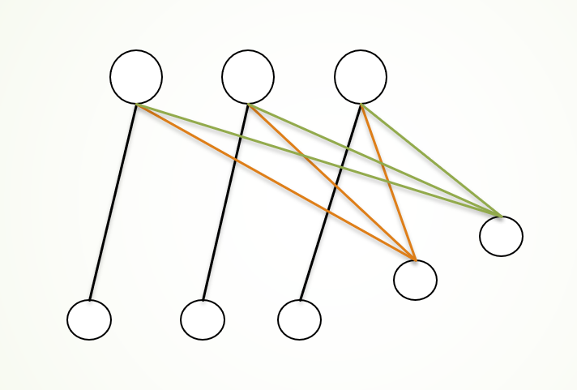

顶点覆盖问题度数贪心算法的一个下界
这个是我做课后题遇到了，结果我构造了大约50min...
度数贪心算法
先描述一下这个贪心近似算法.
假设一张图, 存在映射
算法每次得到
令
便是这种放的得到的一个贪心解。
说人话就是给一张图，每次找度数最大的顶点，然后删掉这个点和关联边继续这个过程。
度数贪心算法的一个近似度下界
先说结论吧，结论是存在一种图，可以让这个算法的近似度下界为
下面我们就来构造这类图
我们先定义一个上部结点和下部结点。
令上部结点中有个结点，按照随便一个顺序编成号结点。
下部结点由的小部分构成，第个部分有个结点
下面我们来构造边，考虑第个小部分, 为了描述方便给这个小部分编号为。
对于每个上部结点，都按某种规律与一个小部分中的结点相连，假设现在是编号为的上部结点，构造边

类似上图
现在来尝试证明这个下界
首先我们可以知道取所有的上部结点作为答案便是一个最小的顶点覆盖。
也就是说对于这类图的最优解是
如果你对调和级数熟悉的话你会发现下部结点的个数和，即
于是如果我们能证明这个算法在某种最坏情况(因为有的时候会有多个点度数相同)下每次都会选取下部结点中的某个加入答案的话，那么我们就能证明这类图能够使得近似度下界达到
我们首先将一类下部结点看做一个整体。
即
之所以要这样划分整个下部结点，是因为每个中的不同编号的小部分其中度数有着相同的分布。
定理一
中的小部分中的最大点度数一定小于中的最小点度数。
令
根据上面连边的顺序可以得到，中的最大点度数为，而中的最小点度数为，由条件得到这个定理成立。
这个定理代表的是如果在不考虑上部结点时，一定是先取编号比较大的小部分中的点作为答案。
定理二
在任意时刻，下部顶点的最大点度一定大于等于上部顶点的最大点度。
首先发现一个小性质，在取下部顶点作为答案时，不会改变下部结点中其他节点的点度，而只会改变上部结点的点度，且一定是变小。
于是我们可以把一个小部分看做一个整体，每次取完一个小部分假设取完了第个小部分，则这个时候上部结点中每个结点的度数均为
由
第个小部分的最小度数为
这个显然大于等于
后话
利用集合覆盖的近似度可以证明这个算法的上界也是的。